DOT and GEMV accuracy model and H200 validation
Predictions for all 17 implemented storage formats under U(0,1) and N(0,1). GEMV fixes M=1024; N is the reduction length. CSV files retain exact zero values even where logarithmic plots place them at a visible floor.
Cell integration is exact for formats with at most 14 fraction bits. Denser formats use a labeled high-resolution approximation. Absolute-error percentiles use a folded-normal approximation. Non-finite formats report finite-conditioned moments plus explicit failure probability.
H200 simulation validation
The measured run run_20260808T122054Z contains 8,192 independent DOT samples per case and 16 independent GEMV matrix/vector replicates. Points show measured storage RMSE; error bars are approximate 95% intervals obtained from the cluster-level MSE standard error.
122 of 122 finite nonzero DOT storage-MSE cases are within 10% of the analytical value. Across GEMV, 155 of 157 comparable cases are within three reported standard errors. The wider GEMV spread is consistent with having only 16 independently generated shared vectors.
The convergence checker classifies the 306 distinct storage comparisons as 187 pass, 92 review, 18 exact zero, and 9 non-finite. Review cases need more independent samples before treating small model/measurement differences as significant.
Measured scalar zero, overflow, and saturation rates agree with the analytical probabilities to a maximum absolute difference of 9.82e-07. Joined data are available in simulation_model_comparison.csv and simulation_encoding_comparison.csv.
| Kernel | Distribution | Comparable cases | Median measured/predicted MSE | Within 10% | Within 20% | Within 2 SE | Within 3 SE |
|---|---|---|---|---|---|---|---|
| DOT | uniform_0_1 | 64 | 1.0026 | 64/64 | 64/64 | 62/64 | 64/64 |
| DOT | normal_0_1 | 58 | 0.9949 | 58/58 | 58/58 | 53/58 | 58/58 |
| GEMV | uniform_0_1 | 80 | 0.9615 | 40/80 | 66/80 | 72/80 | 78/80 |
| GEMV | normal_0_1 | 77 | 0.9984 | 67/77 | 73/77 | 70/77 | 77/77 |
DOT — uniform_0_1


GEMV — uniform_0_1


DOT — normal_0_1


GEMV — normal_0_1


Non-finite outputs
DOT failure rates follow the per-output model. GEMV rows share one vector, so rare vector-overflow events are sampled only 16 times; at small N, an absent rare event can make the measured rate look roughly half the marginal prediction. The complete-operation failure probability remains a separate quantity in kernel_predictions.csv.

FP64 kernel arithmetic
No observed x1/x2/x4 normalized kernel error exceeds its structural bound. The largest observed value uses 35.7% of the bound; violations: 0. 495 of 891 finite kernel comparisons are bit-exact against the decoded-storage reference.

uniform_0_1
SCALAR


DOT
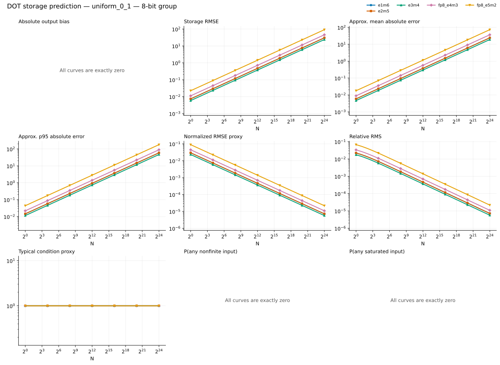
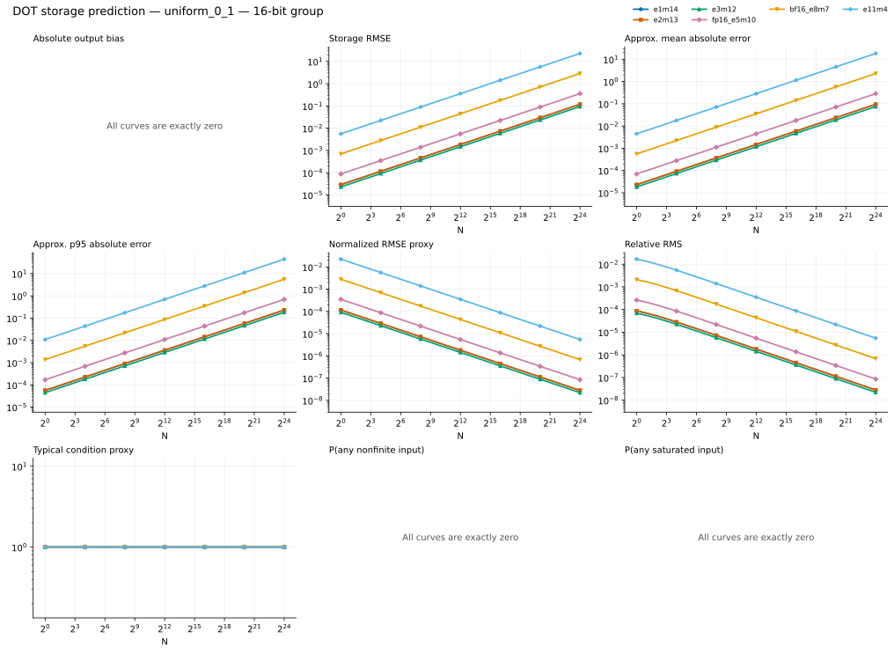
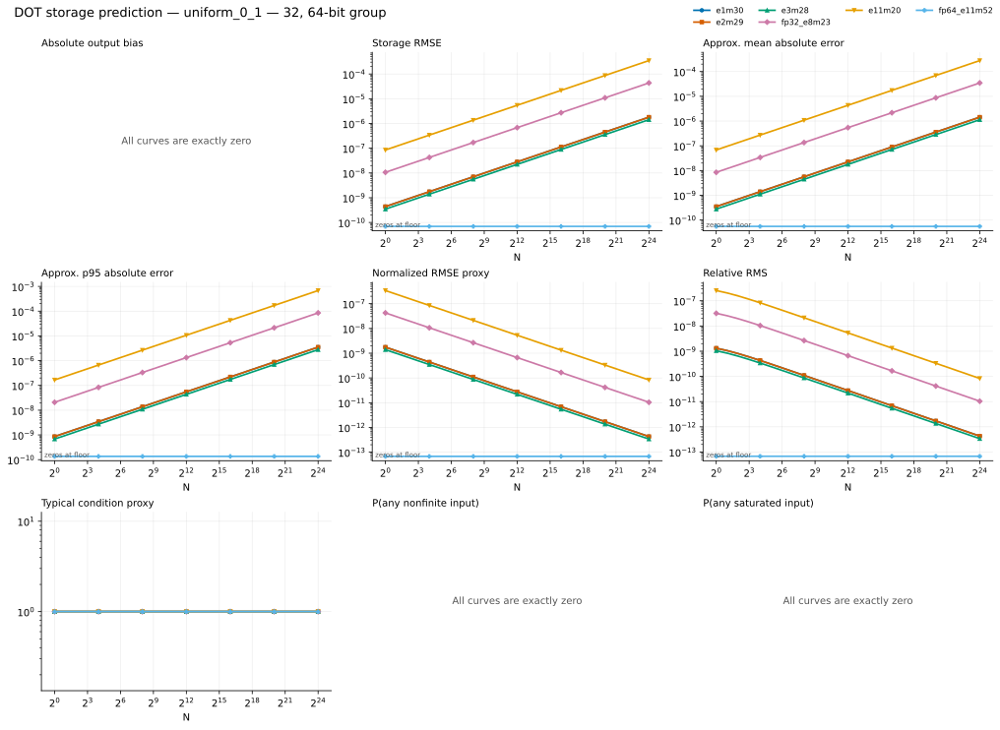
GEMV
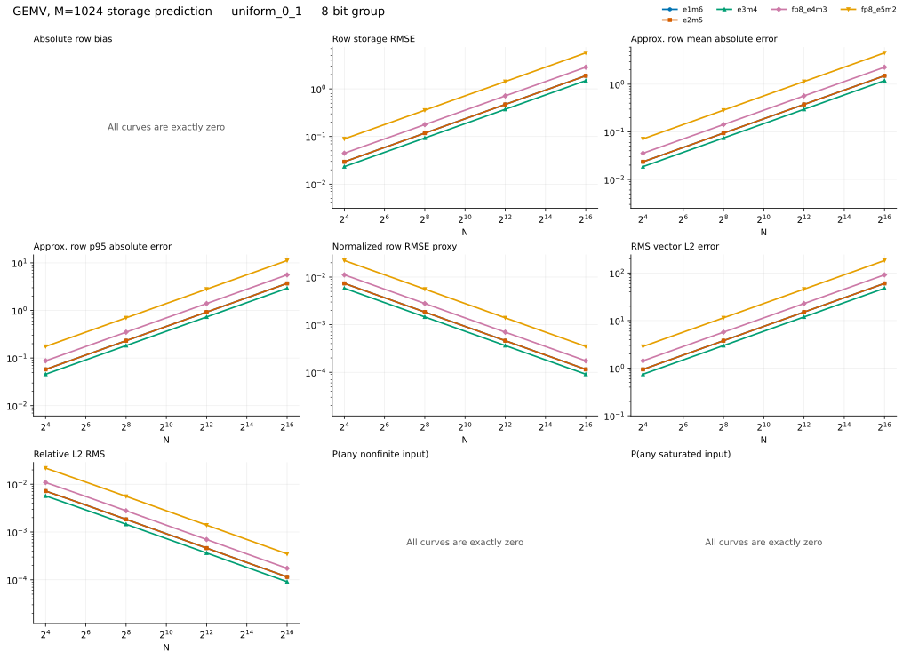
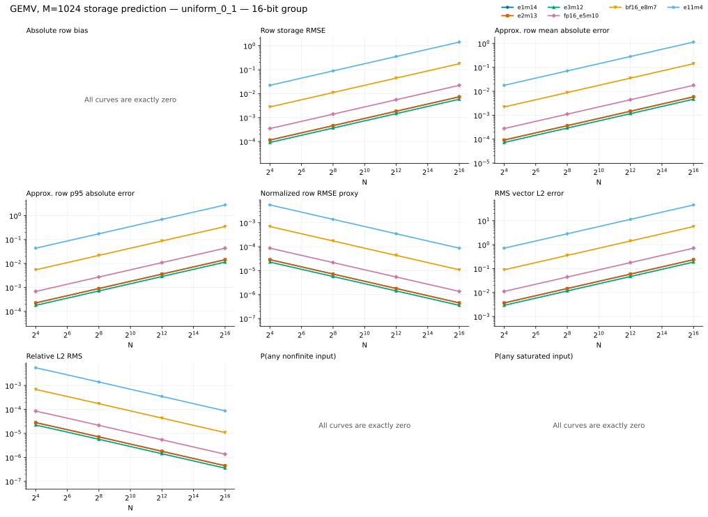
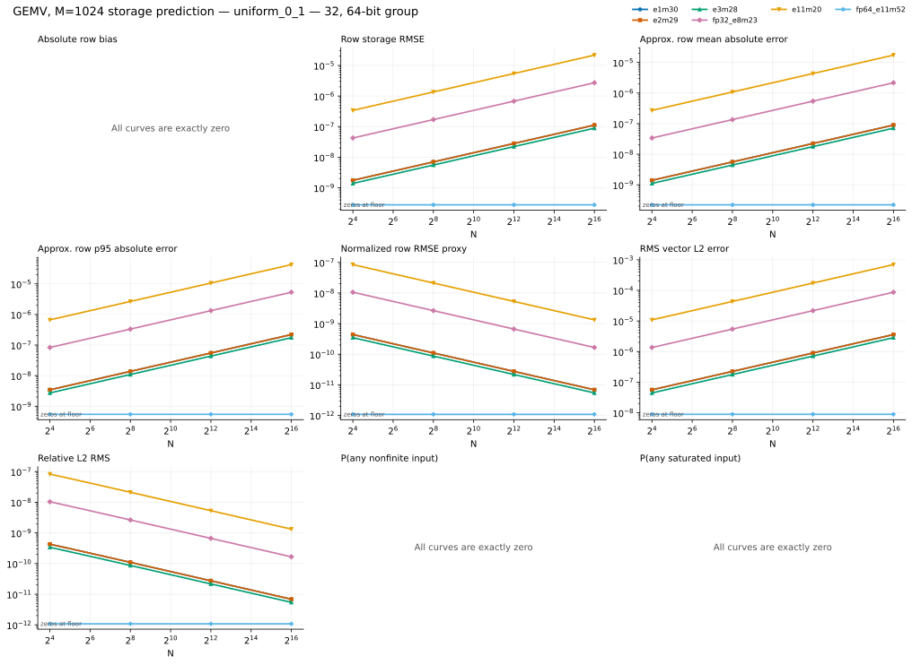
normal_0_1
SCALAR


DOT
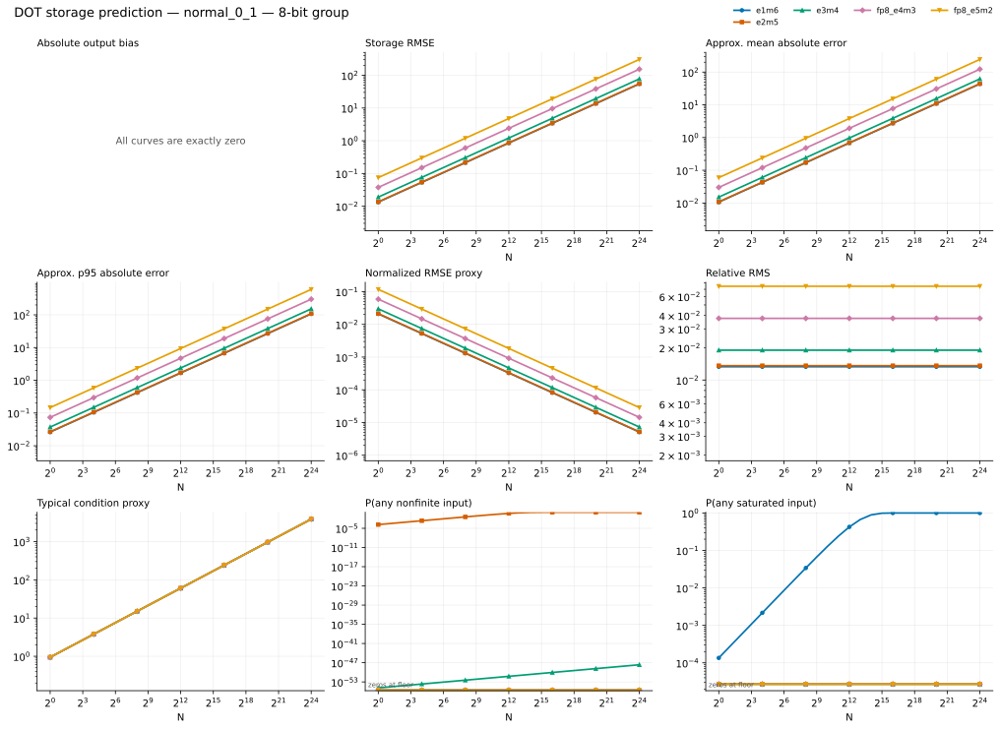
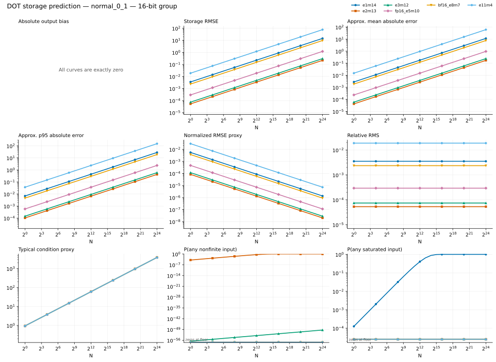
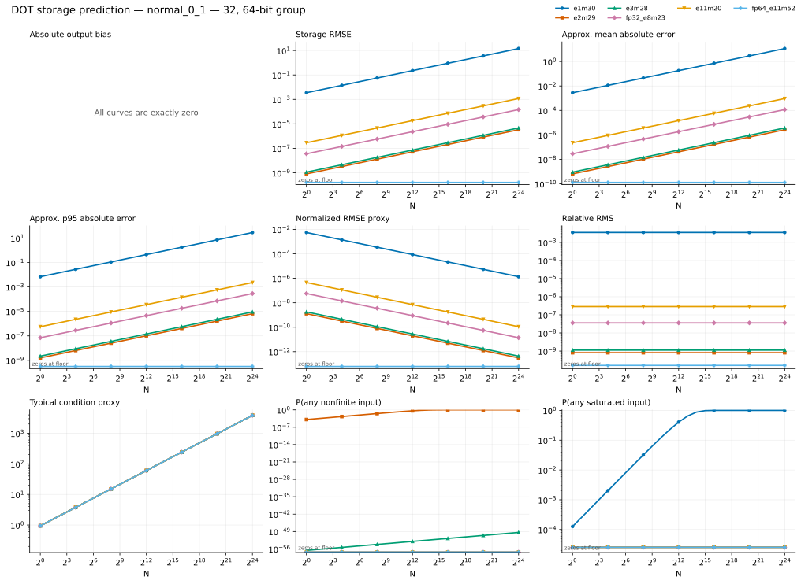
GEMV
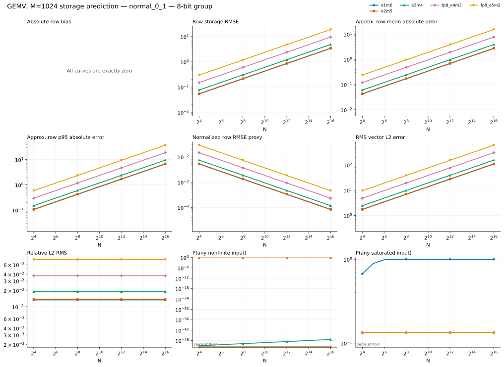
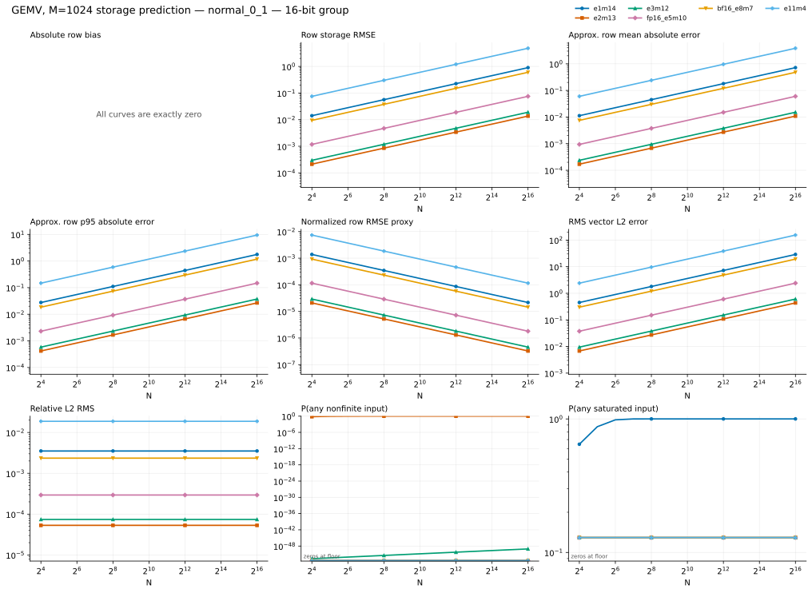
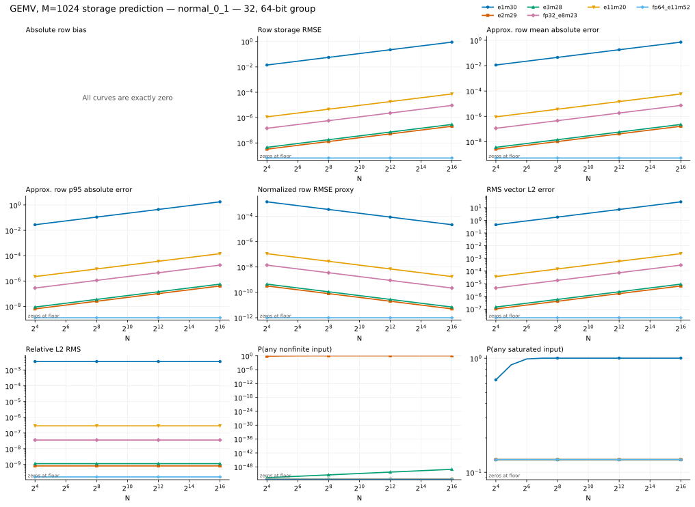
FP64 arithmetic-rounding bound
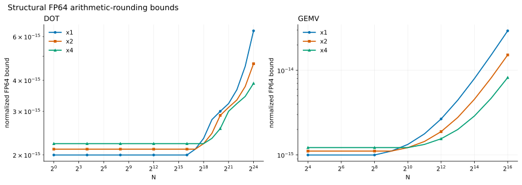
Scalar prediction table
| Distribution | Format | Bits | Method | Scalar RMSE | Overflow probability | Saturation probability |
|---|---|---|---|---|---|---|
| uniform_0_1 | e1m6 | 8 | exact_cells | 9.0211e-03 | 0 | 0 |
| uniform_0_1 | e2m5 | 8 | exact_cells | 9.0211e-03 | 0 | 0 |
| uniform_0_1 | e3m4 | 8 | exact_cells | 7.1318e-03 | 0 | 0 |
| uniform_0_1 | fp8_e4m3 | 8 | exact_cells | 1.3639e-02 | 0 | 0 |
| uniform_0_1 | fp8_e5m2 | 8 | exact_cells | 2.7277e-02 | 0 | 0 |
| uniform_0_1 | e1m14 | 16 | exact_cells | 3.5239e-05 | 0 | 0 |
| uniform_0_1 | e2m13 | 16 | exact_cells | 3.5239e-05 | 0 | 0 |
| uniform_0_1 | e3m12 | 16 | exact_cells | 2.7859e-05 | 0 | 0 |
| uniform_0_1 | fp16_e5m10 | 16 | exact_cells | 1.0655e-04 | 0 | 0 |
| uniform_0_1 | bf16_e8m7 | 16 | exact_cells | 8.5241e-04 | 0 | 0 |
| uniform_0_1 | e11m4 | 16 | exact_cells | 6.8193e-03 | 0 | 0 |
| uniform_0_1 | e1m30 | 32 | high_resolution | 5.3770e-10 | 0 | 0 |
| uniform_0_1 | e2m29 | 32 | high_resolution | 5.3770e-10 | 0 | 0 |
| uniform_0_1 | e3m28 | 32 | high_resolution | 4.2509e-10 | 0 | 0 |
| uniform_0_1 | fp32_e8m23 | 32 | high_resolution | 1.3007e-08 | 0 | 0 |
| uniform_0_1 | e11m20 | 32 | high_resolution | 1.0405e-07 | 0 | 0 |
| uniform_0_1 | fp64_e11m52 | 64 | identity | 0 | 0 | 0 |
| normal_0_1 | e1m6 | 8 | exact_cells | 9.4081e-03 | 0 | 6.7658e-05 |
| normal_0_1 | e2m5 | 8 | exact_cells | 9.6158e-03 | 7.2251e-05 | 0 |
| normal_0_1 | e3m4 | 8 | exact_cells | 1.3417e-02 | 6.8681e-56 | 0 |
| normal_0_1 | fp8_e4m3 | 8 | exact_cells | 2.6543e-02 | 0 | 0 |
| normal_0_1 | fp8_e5m2 | 8 | exact_cells | 5.2826e-02 | 0 | 0 |
| normal_0_1 | e1m14 | 16 | exact_cells | 2.4870e-03 | 0 | 6.3359e-05 |
| normal_0_1 | e2m13 | 16 | exact_cells | 3.7564e-05 | 6.3375e-05 | 0 |
| normal_0_1 | e3m12 | 16 | exact_cells | 5.2431e-05 | 1.2980e-57 | 0 |
| normal_0_1 | fp16_e5m10 | 16 | exact_cells | 2.0771e-04 | 0 | 0 |
| normal_0_1 | bf16_e8m7 | 16 | exact_cells | 1.6617e-03 | 0 | 0 |
| normal_0_1 | e11m4 | 16 | exact_cells | 1.3288e-02 | 0 | 0 |
| normal_0_1 | e1m30 | 32 | high_resolution | 2.4860e-03 | 0 | 6.3342e-05 |
| normal_0_1 | e2m29 | 32 | high_resolution | 5.7318e-10 | 6.3342e-05 | 0 |
| normal_0_1 | e3m28 | 32 | high_resolution | 8.0003e-10 | 1.2778e-57 | 0 |
| normal_0_1 | fp32_e8m23 | 32 | high_resolution | 2.5355e-08 | 0 | 0 |
| normal_0_1 | e11m20 | 32 | high_resolution | 2.0284e-07 | 0 | 0 |
| normal_0_1 | fp64_e11m52 | 64 | identity | 0 | 0 | 0 |